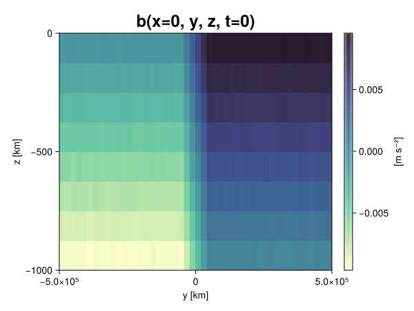
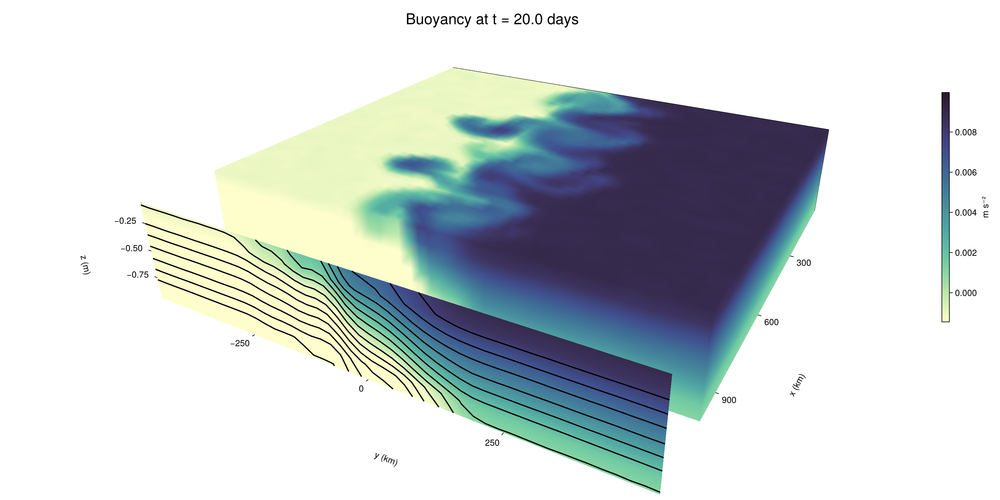

Baroclinic adjustment
In this example, we simulate the evolution and equilibration of a baroclinically unstable front.
Install dependencies
First let's make sure we have all required packages installed.
using Pkg
pkg"add Oceananigans, CairoMakie"using Oceananigans
using Oceananigans.UnitsGrid
We use a three-dimensional channel that is periodic in the x direction:
Lx = 1000kilometers # east-west extent [m]
Ly = 1000kilometers # north-south extent [m]
Lz = 1kilometers # depth [m]
grid = RectilinearGrid(size = (48, 48, 8),
x = (0, Lx),
y = (-Ly/2, Ly/2),
z = (-Lz, 0),
topology = (Periodic, Bounded, Bounded))48×48×8 RectilinearGrid{Float64, Periodic, Bounded, Bounded} on CPU with 3×3×3 halo
├── Periodic x ∈ [0.0, 1.0e6) regularly spaced with Δx=20833.3
├── Bounded y ∈ [-500000.0, 500000.0] regularly spaced with Δy=20833.3
└── Bounded z ∈ [-1000.0, 0.0] regularly spaced with Δz=125.0Model
We built a HydrostaticFreeSurfaceModel with an ImplicitFreeSurface solver. Regarding Coriolis, we use a beta-plane centered at 45° South.
model = HydrostaticFreeSurfaceModel(; grid,
coriolis = BetaPlane(latitude = -45),
buoyancy = BuoyancyTracer(),
tracers = :b,
momentum_advection = WENO(),
tracer_advection = WENO())HydrostaticFreeSurfaceModel{CPU, RectilinearGrid}(time = 0 seconds, iteration = 0)
├── grid: 48×48×8 RectilinearGrid{Float64, Periodic, Bounded, Bounded} on CPU with 3×3×3 halo
├── timestepper: QuasiAdamsBashforth2TimeStepper
├── tracers: b
├── closure: Nothing
├── buoyancy: BuoyancyTracer with ĝ = NegativeZDirection()
├── free surface: ImplicitFreeSurface with gravitational acceleration 9.80665 m s⁻²
│ └── solver: FFTImplicitFreeSurfaceSolver
├── advection scheme:
│ ├── momentum: WENO reconstruction order 5
│ └── b: WENO reconstruction order 5
└── coriolis: BetaPlane{Float64}We start our simulation from rest with a baroclinically unstable buoyancy distribution. We use ramp(y, Δy), defined below, to specify a front with width Δy and horizontal buoyancy gradient M². We impose the front on top of a vertical buoyancy gradient N² and a bit of noise.
"""
ramp(y, Δy)
Linear ramp from 0 to 1 between -Δy/2 and +Δy/2.
For example:
```
y < -Δy/2 => ramp = 0
-Δy/2 < y < -Δy/2 => ramp = y / Δy
y > Δy/2 => ramp = 1
```
"""
ramp(y, Δy) = min(max(0, y/Δy + 1/2), 1)
N² = 1e-5 # [s⁻²] buoyancy frequency / stratification
M² = 1e-7 # [s⁻²] horizontal buoyancy gradient
Δy = 100kilometers # width of the region of the front
Δb = Δy * M² # buoyancy jump associated with the front
ϵb = 1e-2 * Δb # noise amplitude
bᵢ(x, y, z) = N² * z + Δb * ramp(y, Δy) + ϵb * randn()
set!(model, b=bᵢ)Let's visualize the initial buoyancy distribution.
using CairoMakie
# Build coordinates with units of kilometers
x, y, z = 1e-3 .* nodes(grid, (Center(), Center(), Center()))
b = model.tracers.b
fig, ax, hm = heatmap(view(b, 1, :, :),
colormap = :deep,
axis = (xlabel = "y [km]",
ylabel = "z [km]",
title = "b(x=0, y, z, t=0)",
titlesize = 24))
Colorbar(fig[1, 2], hm, label = "[m s⁻²]")
fig
Simulation
Now let's build a Simulation.
simulation = Simulation(model, Δt=20minutes, stop_time=20days)Simulation of HydrostaticFreeSurfaceModel{CPU, RectilinearGrid}(time = 0 seconds, iteration = 0)
├── Next time step: 20 minutes
├── Elapsed wall time: 0 seconds
├── Wall time per iteration: NaN days
├── Stop time: 20 days
├── Stop iteration : Inf
├── Wall time limit: Inf
├── Callbacks: OrderedDict with 4 entries:
│ ├── stop_time_exceeded => Callback of stop_time_exceeded on IterationInterval(1)
│ ├── stop_iteration_exceeded => Callback of stop_iteration_exceeded on IterationInterval(1)
│ ├── wall_time_limit_exceeded => Callback of wall_time_limit_exceeded on IterationInterval(1)
│ └── nan_checker => Callback of NaNChecker for u on IterationInterval(100)
├── Output writers: OrderedDict with no entries
└── Diagnostics: OrderedDict with no entriesWe add a TimeStepWizard callback to adapt the simulation's time-step,
conjure_time_step_wizard!(simulation, IterationInterval(20), cfl=0.2, max_Δt=20minutes)Also, we add a callback to print a message about how the simulation is going,
using Printf
wall_clock = Ref(time_ns())
function print_progress(sim)
u, v, w = model.velocities
progress = 100 * (time(sim) / sim.stop_time)
elapsed = (time_ns() - wall_clock[]) / 1e9
@printf("[%05.2f%%] i: %d, t: %s, wall time: %s, max(u): (%6.3e, %6.3e, %6.3e) m/s, next Δt: %s\n",
progress, iteration(sim), prettytime(sim), prettytime(elapsed),
maximum(abs, u), maximum(abs, v), maximum(abs, w), prettytime(sim.Δt))
wall_clock[] = time_ns()
return nothing
end
add_callback!(simulation, print_progress, IterationInterval(100))Diagnostics/Output
Here, we save the buoyancy, $b$, at the edges of our domain as well as the zonal ($x$) average of buoyancy.
u, v, w = model.velocities
ζ = ∂x(v) - ∂y(u)
B = Average(b, dims=1)
U = Average(u, dims=1)
V = Average(v, dims=1)
filename = "baroclinic_adjustment"
save_fields_interval = 0.5day
slicers = (east = (grid.Nx, :, :),
north = (:, grid.Ny, :),
bottom = (:, :, 1),
top = (:, :, grid.Nz))
for side in keys(slicers)
indices = slicers[side]
simulation.output_writers[side] = JLD2OutputWriter(model, (; b, ζ);
filename = filename * "_$(side)_slice",
schedule = TimeInterval(save_fields_interval),
overwrite_existing = true,
indices)
end
simulation.output_writers[:zonal] = JLD2OutputWriter(model, (; b=B, u=U, v=V);
filename = filename * "_zonal_average",
schedule = TimeInterval(save_fields_interval),
overwrite_existing = true)JLD2OutputWriter scheduled on TimeInterval(12 hours):
├── filepath: baroclinic_adjustment_zonal_average.jld2
├── 3 outputs: (b, u, v)
├── array type: Array{Float64}
├── including: [:grid, :coriolis, :buoyancy, :closure]
├── file_splitting: NoFileSplitting
└── file size: 31.6 KiBNow we're ready to run.
@info "Running the simulation..."
run!(simulation)
@info "Simulation completed in " * prettytime(simulation.run_wall_time)[ Info: Running the simulation...
[ Info: Initializing simulation...
[00.00%] i: 0, t: 0 seconds, wall time: 29.615 seconds, max(u): (0.000e+00, 0.000e+00, 0.000e+00) m/s, next Δt: 20 minutes
[ Info: ... simulation initialization complete (28.888 seconds)
[ Info: Executing initial time step...
[ Info: ... initial time step complete (18.437 seconds).
[06.94%] i: 100, t: 1.389 days, wall time: 38.076 seconds, max(u): (1.277e-01, 1.159e-01, 1.654e-03) m/s, next Δt: 20 minutes
[13.89%] i: 200, t: 2.778 days, wall time: 957.724 ms, max(u): (2.251e-01, 1.838e-01, 1.909e-03) m/s, next Δt: 20 minutes
[20.83%] i: 300, t: 4.167 days, wall time: 947.526 ms, max(u): (3.025e-01, 2.422e-01, 1.825e-03) m/s, next Δt: 20 minutes
[27.78%] i: 400, t: 5.556 days, wall time: 814.778 ms, max(u): (3.649e-01, 3.268e-01, 1.815e-03) m/s, next Δt: 20 minutes
[34.72%] i: 500, t: 6.944 days, wall time: 811.161 ms, max(u): (4.269e-01, 4.545e-01, 1.914e-03) m/s, next Δt: 20 minutes
[41.67%] i: 600, t: 8.333 days, wall time: 867.250 ms, max(u): (4.885e-01, 5.611e-01, 2.285e-03) m/s, next Δt: 20 minutes
[48.61%] i: 700, t: 9.722 days, wall time: 913.817 ms, max(u): (6.395e-01, 8.103e-01, 3.155e-03) m/s, next Δt: 20 minutes
[55.56%] i: 800, t: 11.111 days, wall time: 969.561 ms, max(u): (1.015e+00, 1.115e+00, 3.332e-03) m/s, next Δt: 20 minutes
[62.50%] i: 900, t: 12.500 days, wall time: 947.597 ms, max(u): (1.361e+00, 1.138e+00, 4.724e-03) m/s, next Δt: 20 minutes
[69.44%] i: 1000, t: 13.889 days, wall time: 848.296 ms, max(u): (1.355e+00, 1.218e+00, 5.541e-03) m/s, next Δt: 20 minutes
[76.39%] i: 1100, t: 15.278 days, wall time: 887.521 ms, max(u): (1.381e+00, 1.135e+00, 4.216e-03) m/s, next Δt: 20 minutes
[83.33%] i: 1200, t: 16.667 days, wall time: 948.916 ms, max(u): (1.501e+00, 1.407e+00, 4.489e-03) m/s, next Δt: 20 minutes
[90.28%] i: 1300, t: 18.056 days, wall time: 957.797 ms, max(u): (1.336e+00, 1.435e+00, 3.371e-03) m/s, next Δt: 20 minutes
[97.22%] i: 1400, t: 19.444 days, wall time: 891.488 ms, max(u): (1.554e+00, 1.251e+00, 3.208e-03) m/s, next Δt: 20 minutes
[ Info: Simulation is stopping after running for 1.056 minutes.
[ Info: Simulation time 20 days equals or exceeds stop time 20 days.
[ Info: Simulation completed in 1.057 minutes
Visualization
All that's left is to make a pretty movie. Actually, we make two visualizations here. First, we illustrate how to make a 3D visualization with Makie's Axis3 and Makie.surface. Then we make a movie in 2D. We use CairoMakie in this example, but note that using GLMakie is more convenient on a system with OpenGL, as figures will be displayed on the screen.
using CairoMakieThree-dimensional visualization
We load the saved buoyancy output on the top, north, and east surface as FieldTimeSerieses.
filename = "baroclinic_adjustment"
sides = keys(slicers)
slice_filenames = NamedTuple(side => filename * "_$(side)_slice.jld2" for side in sides)
b_timeserieses = (east = FieldTimeSeries(slice_filenames.east, "b"),
north = FieldTimeSeries(slice_filenames.north, "b"),
top = FieldTimeSeries(slice_filenames.top, "b"))
B_timeseries = FieldTimeSeries(filename * "_zonal_average.jld2", "b")
times = B_timeseries.times
grid = B_timeseries.grid48×48×8 RectilinearGrid{Float64, Periodic, Bounded, Bounded} on CPU with 3×3×3 halo
├── Periodic x ∈ [0.0, 1.0e6) regularly spaced with Δx=20833.3
├── Bounded y ∈ [-500000.0, 500000.0] regularly spaced with Δy=20833.3
└── Bounded z ∈ [-1000.0, 0.0] regularly spaced with Δz=125.0We build the coordinates. We rescale horizontal coordinates to kilometers.
xb, yb, zb = nodes(b_timeserieses.east)
xb = xb ./ 1e3 # convert m -> km
yb = yb ./ 1e3 # convert m -> km
Nx, Ny, Nz = size(grid)
x_xz = repeat(x, 1, Nz)
y_xz_north = y[end] * ones(Nx, Nz)
z_xz = repeat(reshape(z, 1, Nz), Nx, 1)
x_yz_east = x[end] * ones(Ny, Nz)
y_yz = repeat(y, 1, Nz)
z_yz = repeat(reshape(z, 1, Nz), grid.Ny, 1)
x_xy = x
y_xy = y
z_xy_top = z[end] * ones(grid.Nx, grid.Ny)Then we create a 3D axis. We use zonal_slice_displacement to control where the plot of the instantaneous zonal average flow is located.
fig = Figure(size = (1600, 800))
zonal_slice_displacement = 1.2
ax = Axis3(fig[2, 1],
aspect=(1, 1, 1/5),
xlabel = "x (km)",
ylabel = "y (km)",
zlabel = "z (m)",
xlabeloffset = 100,
ylabeloffset = 100,
zlabeloffset = 100,
limits = ((x[1], zonal_slice_displacement * x[end]), (y[1], y[end]), (z[1], z[end])),
elevation = 0.45,
azimuth = 6.8,
xspinesvisible = false,
zgridvisible = false,
protrusions = 40,
perspectiveness = 0.7)Axis3()We use data from the final savepoint for the 3D plot. Note that this plot can easily be animated by using Makie's Observable. To dive into Observables, check out Makie.jl's Documentation.
n = length(times)41Now let's make a 3D plot of the buoyancy and in front of it we'll use the zonally-averaged output to plot the instantaneous zonal-average of the buoyancy.
b_slices = (east = interior(b_timeserieses.east[n], 1, :, :),
north = interior(b_timeserieses.north[n], :, 1, :),
top = interior(b_timeserieses.top[n], :, :, 1))
# Zonally-averaged buoyancy
B = interior(B_timeseries[n], 1, :, :)
clims = 1.1 .* extrema(b_timeserieses.top[n][:])
kwargs = (colorrange=clims, colormap=:deep, shading=NoShading)
surface!(ax, x_yz_east, y_yz, z_yz; color = b_slices.east, kwargs...)
surface!(ax, x_xz, y_xz_north, z_xz; color = b_slices.north, kwargs...)
surface!(ax, x_xy, y_xy, z_xy_top; color = b_slices.top, kwargs...)
sf = surface!(ax, zonal_slice_displacement .* x_yz_east, y_yz, z_yz; color = B, kwargs...)
contour!(ax, y, z, B; transformation = (:yz, zonal_slice_displacement * x[end]),
levels = 15, linewidth = 2, color = :black)
Colorbar(fig[2, 2], sf, label = "m s⁻²", height = Relative(0.4), tellheight=false)
title = "Buoyancy at t = " * string(round(times[n] / day, digits=1)) * " days"
fig[1, 1:2] = Label(fig, title; fontsize = 24, tellwidth = false, padding = (0, 0, -120, 0))
rowgap!(fig.layout, 1, Relative(-0.2))
colgap!(fig.layout, 1, Relative(-0.1))
save("baroclinic_adjustment_3d.png", fig)
Two-dimensional movie
We make a 2D movie that shows buoyancy $b$ and vertical vorticity $ζ$ at the surface, as well as the zonally-averaged zonal and meridional velocities $U$ and $V$ in the $(y, z)$ plane. First we load the FieldTimeSeries and extract the additional coordinates we'll need for plotting
ζ_timeseries = FieldTimeSeries(slice_filenames.top, "ζ")
U_timeseries = FieldTimeSeries(filename * "_zonal_average.jld2", "u")
B_timeseries = FieldTimeSeries(filename * "_zonal_average.jld2", "b")
V_timeseries = FieldTimeSeries(filename * "_zonal_average.jld2", "v")
xζ, yζ, zζ = nodes(ζ_timeseries)
yv = ynodes(V_timeseries)
xζ = xζ ./ 1e3 # convert m -> km
yζ = yζ ./ 1e3 # convert m -> km
yv = yv ./ 1e3 # convert m -> km49-element Vector{Float64}:
-500.0
-479.1666666666667
-458.3333333333333
-437.5
-416.6666666666667
-395.8333333333333
-375.0
-354.1666666666667
-333.3333333333333
-312.5
-291.6666666666667
-270.8333333333333
-250.0
-229.16666666666666
-208.33333333333334
-187.5
-166.66666666666666
-145.83333333333334
-125.0
-104.16666666666667
-83.33333333333333
-62.5
-41.666666666666664
-20.833333333333332
0.0
20.833333333333332
41.666666666666664
62.5
83.33333333333333
104.16666666666667
125.0
145.83333333333334
166.66666666666666
187.5
208.33333333333334
229.16666666666666
250.0
270.8333333333333
291.6666666666667
312.5
333.3333333333333
354.1666666666667
375.0
395.8333333333333
416.6666666666667
437.5
458.3333333333333
479.1666666666667
500.0Next, we set up a plot with 4 panels. The top panels are large and square, while the bottom panels get a reduced aspect ratio through rowsize!.
set_theme!(Theme(fontsize=24))
fig = Figure(size=(1800, 1000))
axb = Axis(fig[1, 2], xlabel="x (km)", ylabel="y (km)", aspect=1)
axζ = Axis(fig[1, 3], xlabel="x (km)", ylabel="y (km)", aspect=1, yaxisposition=:right)
axu = Axis(fig[2, 2], xlabel="y (km)", ylabel="z (m)")
axv = Axis(fig[2, 3], xlabel="y (km)", ylabel="z (m)", yaxisposition=:right)
rowsize!(fig.layout, 2, Relative(0.3))To prepare a plot for animation, we index the timeseries with an Observable,
n = Observable(1)
b_top = @lift interior(b_timeserieses.top[$n], :, :, 1)
ζ_top = @lift interior(ζ_timeseries[$n], :, :, 1)
U = @lift interior(U_timeseries[$n], 1, :, :)
V = @lift interior(V_timeseries[$n], 1, :, :)
B = @lift interior(B_timeseries[$n], 1, :, :)Observable([-0.009379801573370657 -0.00813732683921241 -0.006899159616621488 -0.00561585432257083 -0.004379668692948229 -0.003134203684678448 -0.0018845040858101285 -0.0006479725862016958; -0.009361272609286271 -0.008127532173571688 -0.006860647964259729 -0.005629079016878764 -0.004359796285773317 -0.0031313604408034802 -0.0018965723973055025 -0.0006312235029586744; -0.009361455142910325 -0.00811511881323037 -0.006854839863474643 -0.005610389009940032 -0.004352023842158091 -0.003119464241522145 -0.0018632087325798116 -0.0006293642057743574; -0.009368868991888237 -0.008135299727551492 -0.006863561632852307 -0.005608202877359418 -0.004358496967635679 -0.003101459758658579 -0.0018693046191269353 -0.0006233191277046204; -0.009391284114372142 -0.008132186274410796 -0.0068921207725469655 -0.005622177540118951 -0.004356332027459866 -0.0031336986820575397 -0.0018927125687463473 -0.0006234683302830509; -0.009380240583833134 -0.00813436002934262 -0.006885067562434591 -0.0056306245953793195 -0.004363376792559038 -0.0031352179649911213 -0.0018651596285216246 -0.0006213649324009558; -0.009352416597864595 -0.008121438972854998 -0.00688211684841886 -0.005640104713369805 -0.004390505525305896 -0.0031110963533235686 -0.0018672007969599412 -0.0006136060422794349; -0.009385948767345794 -0.008136352475555083 -0.0068695761748863715 -0.005626388596080538 -0.004363667912119415 -0.0031208262057560734 -0.001903572832103992 -0.0006357280086018262; -0.00936197420326498 -0.008118529504545566 -0.006891461844167033 -0.005606468711212236 -0.004405119282791997 -0.003124489451102181 -0.0019004338990882622 -0.0006097319677039098; -0.009387337021137808 -0.008119144542495441 -0.0068754954445502505 -0.005615966911022033 -0.004370327290138428 -0.0031193423532627808 -0.0019046535735097563 -0.000617493303122849; -0.00937877676362618 -0.008130975714574183 -0.006899260670874712 -0.005641312662335782 -0.004354745396204822 -0.0031010727985357352 -0.0018528641520991276 -0.0006091799454035644; -0.009379541893831769 -0.00813469473804542 -0.006889951315588152 -0.005622075194943235 -0.004390878772121214 -0.003121484886793266 -0.0018724911153222845 -0.0006232971802390955; -0.009379552705012503 -0.008132688389630072 -0.006871488054654572 -0.005631078164419031 -0.004365748294275118 -0.0031620453613467954 -0.0018820413408944976 -0.000643094499315186; -0.009362442059012243 -0.008120006538466312 -0.006862981147765804 -0.005636542392644992 -0.004388269404237234 -0.0031252392947579842 -0.0018442084876522703 -0.0006365462809821003; -0.009406990271722865 -0.008133424279931729 -0.006886392663388947 -0.00562158442174662 -0.004357723449677761 -0.003128973669038414 -0.001854251559296969 -0.0006457501598151291; -0.009389178342618003 -0.008133951936677283 -0.006867272059992091 -0.005628988358129891 -0.004344053836843516 -0.0031338415960620973 -0.0018689530458695924 -0.0006333698699404212; -0.009368429476238452 -0.008138207865228494 -0.006855617507987824 -0.005632648621332114 -0.0043782520547318215 -0.003121741864807776 -0.001873833445781239 -0.0006106626062423844; -0.009355542386020719 -0.008104030110297327 -0.006891628412858722 -0.005616085403475991 -0.004382623055473429 -0.0031361541334559762 -0.0019000391465632367 -0.000624524685173249; -0.009380614519982218 -0.008112172708893183 -0.006874343606049971 -0.005632958221171428 -0.004377410557536012 -0.003140081547041025 -0.001859342690151137 -0.0006227781743493394; -0.009381630299896504 -0.008126001221341718 -0.006900255228138078 -0.005625540751639506 -0.004375636844262749 -0.0031026563944405844 -0.0018620274397386496 -0.0006283524029450245; -0.009384569701304841 -0.00814160886528379 -0.006880491737815649 -0.005617856098168532 -0.004381017544044505 -0.0031305298993411917 -0.0018793092001103647 -0.0006276401664760288; -0.009392435581901044 -0.008124228327288688 -0.006880674029613144 -0.00561244768526335 -0.004349191241932234 -0.0031332555089504817 -0.0018723854451090903 -0.000646319931178149; -0.007493424152909697 -0.006255065442838399 -0.00501134562002731 -0.003729528823187765 -0.002512310250761614 -0.00125030123512621 -3.132582302353441e-5 0.0012238355306805337; -0.005411269798998963 -0.0041685837761435696 -0.002903423760836858 -0.0016856643854973451 -0.0004301513541817035 0.0008133354145544203 0.0020857739044112884 0.0033303637663119035; -0.0032881932036640227 -0.0020765190116791964 -0.0008389537890963228 0.0004109666646646412 0.0016662997222015921 0.002912947124238395 0.004170452861683663 0.005414262019983222; -0.0012121443863300923 -9.231706022423505e-6 0.0012316321889333595 0.002506278890098279 0.003727843011155243 0.00499456841617069 0.006252324316504791 0.007502376711427134; 0.0006153420098350797 0.0018720969905713068 0.003130801470674049 0.004399237460057264 0.005614760181600029 0.006887472208775352 0.008104243022966423 0.009357737440011631; 0.0006237375017099344 0.001842734943565087 0.003115716967046843 0.00436844848927237 0.00563061705750044 0.006886638371073739 0.0081258267512404 0.009382891615131792; 0.0006108959915764227 0.0018628397678581742 0.0031207009697360095 0.004351031691003217 0.005612329982132344 0.006860369930527861 0.008120201322279698 0.00936678015863349; 0.000636462280495768 0.001877090740539063 0.0031372674023471283 0.004365270337185859 0.005635443755715022 0.006868873694543631 0.008146843996798802 0.009387977412872355; 0.0006126266962908092 0.0018718765828248812 0.0031404722854171847 0.004382041957507296 0.005633840249330837 0.006874208153152581 0.008129859485188948 0.009356270409769649; 0.0006370791082958209 0.001864927302565777 0.0031426948741882913 0.00436857277798764 0.005644554366948049 0.006854634989504349 0.008151850592327795 0.009348388892382167; 0.000639077576265777 0.00187236242173912 0.0031183684834595877 0.004360522103620898 0.005608921300135451 0.006880126434329917 0.00812299363679525 0.009383461857275196; 0.0006116778852194569 0.0018581462918325976 0.0031295663363798613 0.004390224066885959 0.0056248766630063105 0.006868156450491686 0.008140729451454021 0.0093994870326512; 0.0006401713385458242 0.0018801052014033022 0.00315008065341859 0.004390042862772142 0.0056407796962882105 0.006873180390616015 0.008105142047811487 0.009377708713929837; 0.000617504337758445 0.0018858395531259906 0.003126103751424049 0.004384756507704028 0.005633442715475982 0.006888183734270342 0.008119302448030276 0.009387477681119366; 0.0006207505613144941 0.0018735334980453332 0.003120205767576715 0.0043638357417568035 0.005628001105664687 0.006882376264305459 0.00812148506382809 0.009392467102488354; 0.0006178329812308768 0.0018628825013881068 0.003152866721582852 0.004374490150310258 0.005612289049626233 0.0068574882811010705 0.008125916319391585 0.009376308825047515; 0.0006372085777937947 0.0018790140288945404 0.003133021768624164 0.0043846901927648155 0.00562754545254538 0.006864277013455061 0.00815900247726406 0.009359354435545046; 0.0006567167305203698 0.0018497327425124343 0.0031240358156959507 0.004355853989139639 0.005627721417284191 0.006880621558321705 0.008101030975305318 0.00933202342118633; 0.000607108538691859 0.001861601461349318 0.003104824851763751 0.004389347948870727 0.005630551849311088 0.006889118281717832 0.008121649118655433 0.009354687850986925; 0.0006176018718782945 0.0018738713483569928 0.003117263056355497 0.004366082659880426 0.005628382241374429 0.006875521827774743 0.008118855152852497 0.009394677967871955; 0.0006092882923936276 0.0018790341885028007 0.0031324249657454675 0.004380309658732442 0.005635348225555937 0.0068766046526240665 0.008125975679623683 0.009370429414071152; 0.0006160498317908777 0.001873684103504362 0.003116059779365242 0.004363505395518087 0.005617581967948637 0.006879399557735245 0.008149629163367538 0.009348732051631498; 0.0006240240822703315 0.0018671558671128359 0.0031305295075171064 0.004360642359872379 0.005618118566250091 0.0068655691571403625 0.008105006783830337 0.009360574385717135; 0.0006433166052361195 0.0018556333607583839 0.0031250702717286125 0.0043854291493409065 0.0056245648259049446 0.006847692284545195 0.008118075153529978 0.009339028778414494; 0.0006147974602784843 0.0018767648616825295 0.0030975567731747907 0.004393863760268463 0.005614452007217496 0.006873679252780856 0.00812935793343573 0.0093783767646496; 0.0006455724369905886 0.0018748523137804565 0.0031330797867032945 0.004380631274812501 0.005627784896350119 0.0068656044513499105 0.008151095990311876 0.009371347865699622])
and then build our plot:
hm = heatmap!(axb, xb, yb, b_top, colorrange=(0, Δb), colormap=:thermal)
Colorbar(fig[1, 1], hm, flipaxis=false, label="Surface b(x, y) (m s⁻²)")
hm = heatmap!(axζ, xζ, yζ, ζ_top, colorrange=(-5e-5, 5e-5), colormap=:balance)
Colorbar(fig[1, 4], hm, label="Surface ζ(x, y) (s⁻¹)")
hm = heatmap!(axu, yb, zb, U; colorrange=(-5e-1, 5e-1), colormap=:balance)
Colorbar(fig[2, 1], hm, flipaxis=false, label="Zonally-averaged U(y, z) (m s⁻¹)")
contour!(axu, yb, zb, B; levels=15, color=:black)
hm = heatmap!(axv, yv, zb, V; colorrange=(-1e-1, 1e-1), colormap=:balance)
Colorbar(fig[2, 4], hm, label="Zonally-averaged V(y, z) (m s⁻¹)")
contour!(axv, yb, zb, B; levels=15, color=:black)Finally, we're ready to record the movie.
frames = 1:length(times)
record(fig, filename * ".mp4", frames, framerate=8) do i
n[] = i
endThis page was generated using Literate.jl.